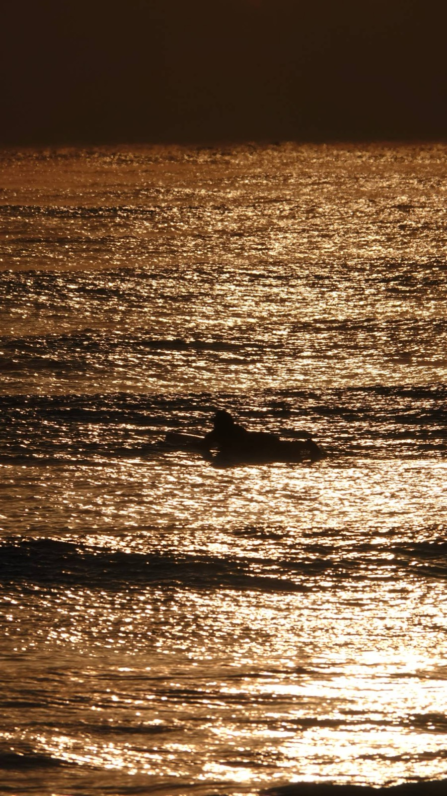
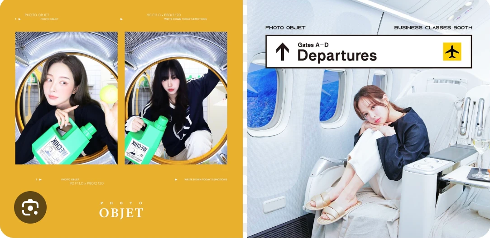
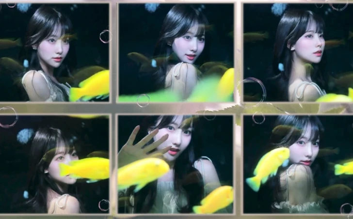
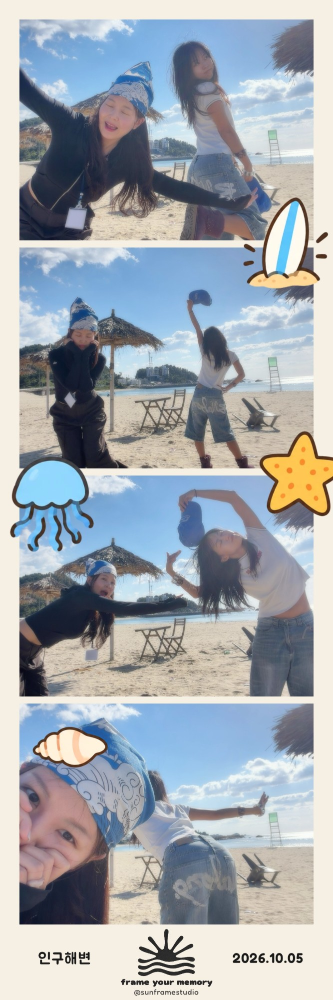
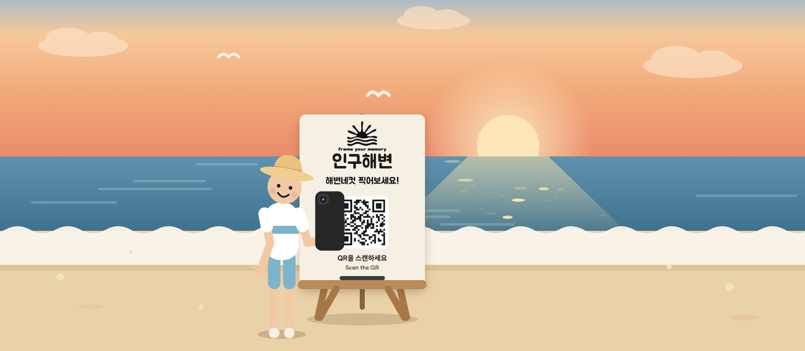
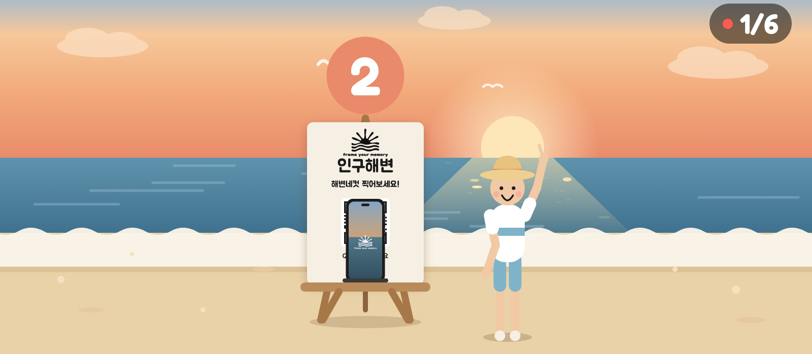
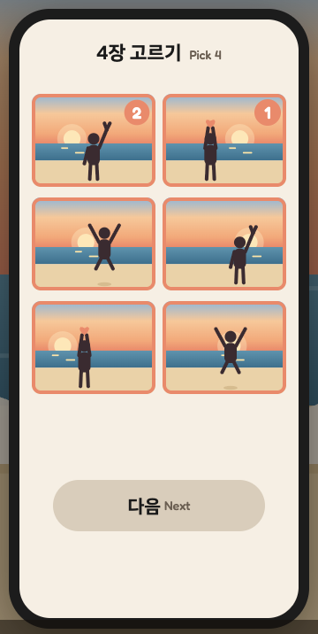
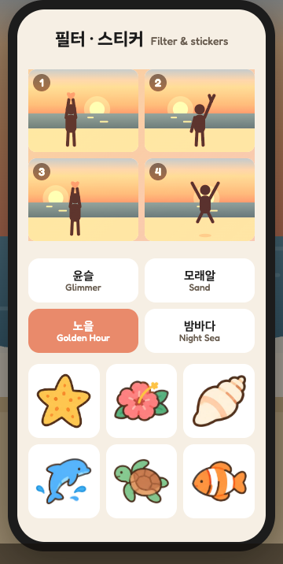
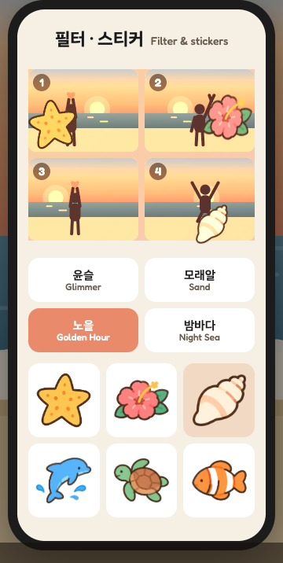
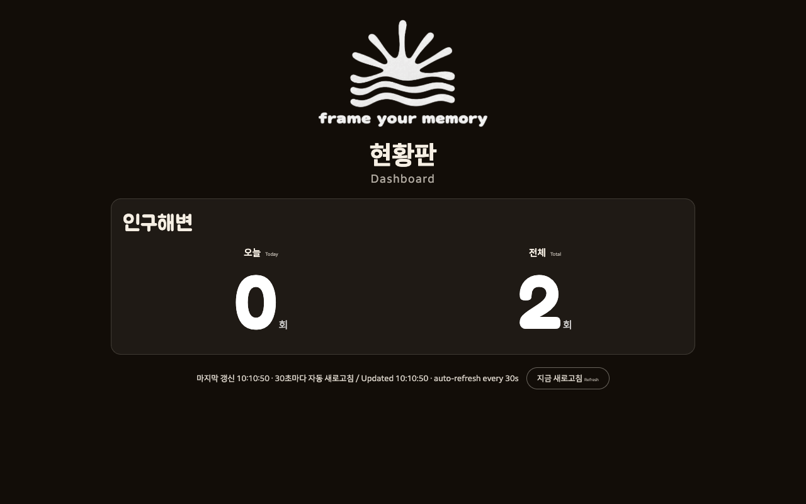

이수은 · AI 내일바꿈 3기


01 · 발견
부스마다 다른 컨셉, 캐릭터·연예인 콜라보 프레임까지
양양에 놀러 와서 사진을 찍는데,
02 · 아이디어
이렇게요.
2026.10.05 인구해변에서
직접 찍은 해변네컷



포즈 준비 시간
카운트다운마다 한 장
자동으로 연속 촬영

6장 중 마음에 드는 4장

윤슬 · 모래알 · 노을 · 밤바다

크기·방향 자유롭게
완성
왼쪽엔 QR이 놓인 명소 이름,
오른쪽엔 찍은 날짜가 자동으로.
저장 버튼 하나면 내 휴대폰에.

사진관도, 전용 카메라도 필요 없이